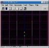
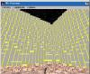
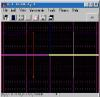
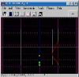
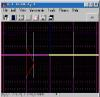
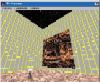
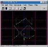
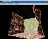
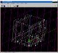

Compiled by Justin Stocks
| This tutorial will teach you how to create realistic outdoor canyon walls and ground. It's very simple, and requires very little time. Screen shots will accompany each step to the right. They're thumbnailed, so you need to click on them to see the pics full sized. | |
| Step 1: First things first, start up JED. We have to prepare the default box to be canyoned so jump into side mode (Shift-2) and pull the top surface until your sector is 2 JKU tall (that's exactly double the default sectors size.) |  |
| Step 2: For this tutorial I'll be using 15maw.cmp, so open up the Level Header Editor (F6) and change the master CMP to 15maw.cmp. Texture the floor and sky (just for the heck of it.) Load up 3D Preview. After doing all that, my 3D Preview looked like this: |  |
| Step 3: Jump into top mode and we'll start the cleaving! Cleave out a section of your sector from one of the walls on the side. I cleaved out exactly .3 JKU as you can see in the pic. |  |
| Step 4: Pop into side mode (Shift-2) and cleave your new sector with slants that slant in towards your central section. (I'm not sure If I've worded that right, but the screen shot explains it better. |  |
| Step 5: Switch back to top view (Shift-1) and repeat step 4 in this view on the sector you created in step 4. The pic for this step looks almost exactly like the one for Step 4, so I have no idea why I'm even putting it here. |  |
| Step 6: Delete the groovy sector you made. Load up 3D Preview. Texture the "bump" you have sticking out of the wall. Remember to use stitching to get the textures to line up right. Personally, for canyons, my favorite textures are 14clif21a.mat, 14clif2b.mat and 14clif2c.mat. Here's what my 3D Preview looked like at this point. |  |
| Step 7: At this point, I'm gonna show you screen shots of all the main views (Shift-1, Shift-2 and Shift-3, respectively.): | |
| Step 8: Repeat steps 3 - 6 throughout your canyons. Keep your cleaving random and NEVER move the vertices of your "bumps" you create. Keeping random is very important. If you use this technique but don't random your heights or widths your canyon still won't look realistic. Here's a pic of what my canyon looked like from Front view (Shift-3) after I'd finished working on that one wall of my canyon. |  |
| Step 9: Here's what my canyon looked like in 3D Preview after I'd cleaved out both sides. Please note that this only took me about 3 minutes to do, and the frame rate is excellent. That's one of the best things about this technique, the frame rate. Even in large "canyonized" area's, the frame rate will generally stay good! |  |
| Step 10: Here's a final screen shot, from an angle, showing the level after I'd used this same method on the floor. Remember, when using this on the floor, to set all your floor flags after you've cleaved out a "bump." |  | I hope I've helped everyone learn how to do awesome outdoor architecture with this Tutorial. Remember these 3 simple rules when going about "canyonizing" your connected boxes. Rule 1: Be RANDOM! Don't cleave along the same height and the same width throughout your entire level. Rule 2: EXPERIMENT! As long as you cleave and don't move the vertices or surfaces manually you won't get any errors using this method. Rule 3: Watch for skinny surfaces. Sometimes, when using this technique in awkward areas, you can get very very skinny surfaces. Be careful to watch for these, since they'll screw up your stitching. I hope to see some cool levels as a result of this tutorial, so get out there and get canyoning! |

{kind=link}
{kind=link}
{kind=link}
{kind=link}
{kind=link}
{kind=link}
{kind=link}
{kind=link}
{kind=link}
{kind=link}
{kind=link}